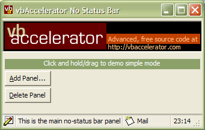

VB5 No Status Bar Class (31K)
VB5 No Status Bar Class (31K)
 VB6 No Status Bar Class (30K)
VB6 No Status Bar Class (30K)
 21 Jun 2003
21 Jun 2003
VB6 download did not have the updated version checking. Fixed.

vbAccelerator No Status Bar Control
A fully-featured, ultra-lightweight status bar implemented in a class
This article provides a small class which implements all of the StatusBar functionality you're likely to need in an application with none of the distribution headaches associated with a control. The latest version supports XP Style drawing and frankly looks quite great.
Using the Class
To use the class, you first need to place a PictureBox on the form to display the status bar in. Typically you'll set this to be aligned to the bottom of the form. Don't set the AutoRedraw property of the text box to True, otherwise any changes you make to panels will not be painted until the Refresh method is called on the PictureBox.
Once this has been done, create a form-wide instance of the cNoStatusBar class and call the Create method, passing in the control you want the class to draw on. Then ensure that the bar is redrawn in the PictureBox's Paint event. Here is the skeleton code you need:
Private m_cSBar As New cNoStatusBar
Private Sub Form_Load()
With m_cSBar
.Create picStatus
End With
End Sub
Private Sub picStatus_Paint()
m_cSBar.Draw
End Sub
Now you can configure the panels, panel text and icons for the status bar. For a simple status bar with two panels this might look like this:
With m_cSBar
' Associate a ComCtl32.DLL compatible image list:
.ImageList = ilsIcons
' Add a main panel which springs to fit the available
' size:
.AddPanel , "Please wait whilst the application loads", _
, , True, , , "MAIN"
' Add an icon panel: icons are specified using 0-based
' index:
.AddPanel , "My Computer", 0, , , , , "DOMAIN"
' Show the size grip:
.SizeGrip = True
' Set the height of the status bar to the system default
' height:
picStatus.Height = .Height
End With
More details of the methods and properties available are provided in the Status Bar Control article.
Compared to the vbAccelerator Status Bar Control
The No-Status Bar class shares all the methods of the status bar control, except:
- It has no events.
- It does not support owner draw panels.
- It does not support pre-defined panels, such as NumLock, CapsLock, Date/Time and so on. Check the source code for the full Status Bar if you want a hint on building these items.
XP Style in the No Status Bar class does not require an application manifest as the class uses the UxTheme.DLL API to draw the status bar panels. Instead, set the AllowXPStyles property to switch on or off the XP Style drawing. By default, on an XP machine, this property will be set and the control will draw using the theme selected for your application - you can turn it on or off at any point. If the machine is a lower Windows version than XP, this property will be off and an attempt to turn it on will raise an "Unsupported" error.
Other than that, the interface exposed by the class is identical to the control, so you can refer to the documentation provided for more information.